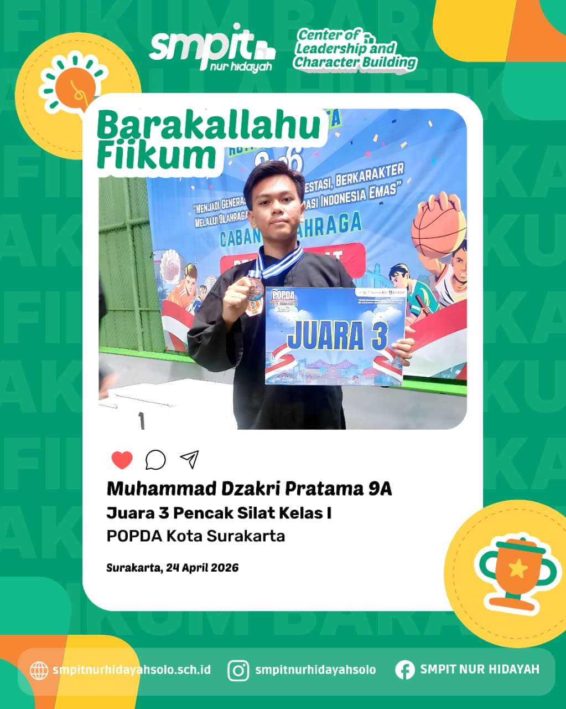

OLAHRAGA 01Muhammad Dzakri Pratama Harumkan SMPIT Nur Hidayah Surakarta di Ajang POPDA Kota Surakarta
Surakarta, 24 April 2026 – Prestasi membanggakan kembali ditorehkan siswa SMPIT Nur Hidayah Surakarta. Muhammad Dzakri Pratama, siswa kelas 9A, berhasil meraih Juara 3 Pencak Silat Kelas I Putra dalam ajang Pekan Olahraga Pelajar Daerah (POPDA) Kota Surakarta 2026 yang digelar pada Kamis, 24 April 2026.